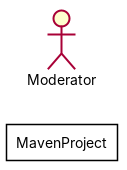
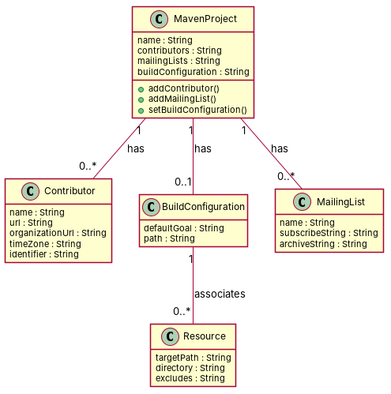

← all cases
D2/MavenProject — model qwen, condition B, run 1
1. Requirements (input)
R1: A project is described by an identifier, an artifact identifier, and a description.
R2: A build configuration has one default goal, and one path to a unit test source directory.
R3: A resource has one target path, a directory, and an excludes string.
R4: A mailing list has a name, a subscribe string, and an archive string.
R5: A person contributing to a Maven project has a name, a URL, an organization URL, and a given time zone.
R6: A developer contributing to a Maven project has a unique identifier.
R7: A Maven project has contributors.
R8: A Maven project is composed of zero to n mailing lists.
R9: A Maven project is composed of at most one build configuration.
R10: A build configuration is associated with at least zero and at most n resources.
2. Result 1 → Result 2 (ambiguity removal)
Red, struck-through: removed by ambiguity removal; green: added.
| classes (5 → 5) |
|---|
| BuildConfiguration |
| Developer |
| MailingList |
| MavenProject |
| NResource |
| attributes (5 → 5) |
|---|
| BuildConfiguration.default goal |
| BuildConfiguration.path |
| Developer.identifier |
| MailingList.name |
| MavenProject.contributor |
| relations (1 → 1) |
|---|
| association: BuildConfiguration -> NResource |
3. Ambiguity tags
| id | req | type | cue | status | readings / explanation |
|---|
| A1 | R4 | coordination | modifier scope: string | resolved | A mailing list has a name and a subscribe string, but not an archive string.; A mailing list has a name, a subscribe string, and an archive string.
The sentence suggests that either the subscribe string or the archive string is optional, but not both. |
4. Diagrams generated from the shared model
usecase diagram
class diagram
5. Code skeleton (Python; Java in code/java/)
"""Code skeleton generated from the shared model of D2/MavenProject.
Every class and method records the requirement(s) it traces to."""
from __future__ import annotations
import dataclasses as _dc
import enum as _enum
import typing as _t
@_dc.dataclass
class MavenProject:
"""Source: R7, R8, R9"""
name: _t.Optional[str] = None
contributors: _t.Optional[str] = None
mailingLists: _t.Optional[str] = None
buildConfiguration: _t.Optional[str] = None
def addContributor(self) -> None:
"""Operation."""
raise NotImplementedError
def addMailingList(self) -> None:
"""Operation."""
raise NotImplementedError
def setBuildConfiguration(self) -> None:
"""Operation."""
raise NotImplementedError
@_dc.dataclass
class Contributor:
"""Source: R5, R6"""
name: _t.Optional[str] = None
url: _t.Optional[str] = None
organizationUrl: _t.Optional[str] = None
timeZone: _t.Optional[str] = None
identifier: _t.Optional[str] = None
@_dc.dataclass
class BuildConfiguration:
"""Source: R2, R9"""
defaultGoal: _t.Optional[str] = None
path: _t.Optional[str] = None
resources: _t.List["Resource"] = _dc.field(default_factory=list)
@_dc.dataclass
class MailingList:
"""Source: R4"""
name: _t.Optional[str] = None
subscribeString: _t.Optional[str] = None
archiveString: _t.Optional[str] = None
@_dc.dataclass
class Resource:
"""Source: R3"""
targetPath: _t.Optional[str] = None
directory: _t.Optional[str] = None
excludes: _t.Optional[str] = None
6. Validation, checks and traceability
| python_compiles | True |
|---|
| java_compiles | True |
|---|
| attribute_mismatches | 0 |
|---|
| method_mismatches | 0 |
|---|
| use_cases | 0 |
|---|
| use_cases_without_actor | 0 |
|---|
| use_cases_without_method | 0 |
|---|
| actors_without_use_case | 1 |
|---|
| relations_to_unknown_class | 0 |
|---|
| inconsistencies | 1 |
|---|
| inconsistency_rate | 0.1667 |
|---|
| requirement_coverage | 0.9 |
|---|
| validator fixes | |
|---|
| assumptions for open ambiguities | [] |
|---|
7. Scores against the reference
| element | P | R | F1 | TP/FP/FN |
|---|
| classes | 0.6 | 0.429 | 0.5 | 3/2/4 |
| attributes | 0.235 | 0.143 | 0.178 | 4/13/24 |
| relations | 0.0 | 0.0 | 0.0 | 0/4/7 |
| relations_strict | 0.0 | 0.0 | 0.0 | 0/4/7 |